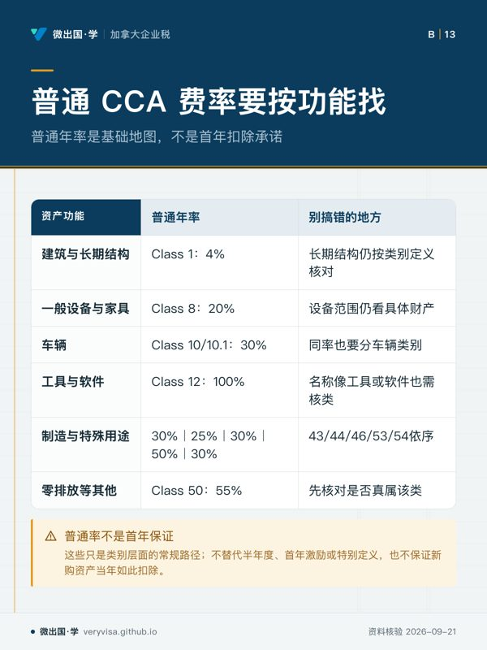
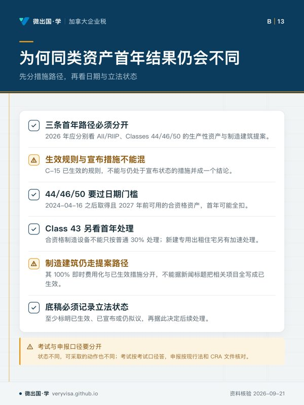
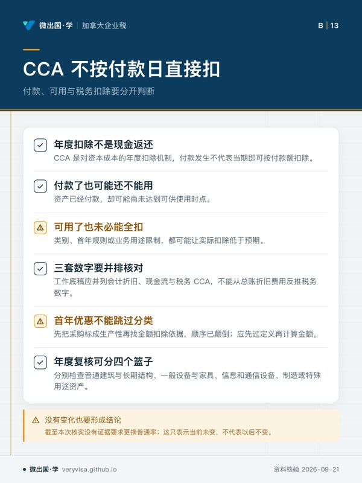

核实日期：2026-10-30｜本页口径：2026 税年 CCA；普通类别费率与 2024-04-16 后资产的特别首年规则必须分开读取。
公司或自雇者买机器、车辆、电脑或建筑时，最容易犯的错误是把「买了多少钱」直接当成「今年能扣多少钱」。资本成本折让（CCA）先把可折旧财产放进对应类别，再按该类的年率和当年适用的首年规则计算扣除。这一页帮你先把资产放进正确的类别，再判断第一年最多能扣多少。
一、先记三个日期：取得日、可供使用日、处置日
CCA 只对已经「可供使用」(available for use) 的资产开始计提：设备付了款、但还没安装投产，一般还不能提折旧。首年加速措施又常常同时看取得日和可供使用日——例如生产性资产首年全扣要求 2024 年 4 月 16 日或之后取得、并在 2027 年前可供使用。所以资产台账至少要分栏记下合同日、交付日、安装或开始使用日和业务用途比例；只留一张付款记录，判断不了适用哪一套首年规则。
二、常见类别与普通年率
| 类别 | 普通年率 | 典型资产 |
|---|---|---|
| Class 1 | 4%（2026 税年；已生效；官方公布值） | 1987 年后取得的大部分建筑（土地不可折旧） |
| Class 8 | 20%（2026 税年；已生效；官方公布值） | 家具、固定装置、不属于其他类别的设备、$500 及以上的工具 |
| Class 10 | 30%（2026 税年；已生效；官方公布值） | 一般汽车、货车，以及不受 10.1 上限约束的乘用车 |
| Class 10.1 | 30%（2026 税年；已生效；官方公布值） | 税前成本超过当年上限的乘用车（2026 年取得为 39,000 元），每辆单独成类 |
| Class 12 | 100%（2026 税年；已生效；官方公布值） | $500 以下的小工具、厨具、医疗器械，非系统类软件 |
| Class 43 | 30%（2026 税年；已生效；官方公布值） | 制造与加工机器设备（2026 年起取得的同类新设备也归这里） |
| Class 44 | 25%（2026 税年；已生效；官方公布值） | 专利及专利使用权 |
| Class 46 | 30%（2026 税年；已生效；官方公布值） | 数据网络基础设备及其系统软件 |
| Class 50 | 55%（2026 税年；已生效；官方公布值） | 一般电脑硬件及其系统软件 |
| Class 53 | 50%（2026 税年；已生效；官方公布值） | 2016–2025 年取得的制造与加工机器设备（2026 年起不再新增） |
| Class 54 | 30%（2026 税年；已生效；官方公布值） | 零排放乘用车（2026 年成本上限 61,000 元） |
年率是余额递减法下对「未折旧资本成本 (UCC)」的年率，不是对原价的直线折旧。Class 43 的 30% 与 Class 50 的 55% 差得很远，电脑归错类、或把制造设备当一般设备放进 Class 8，几年下来扣除时点会差很多。
三、第一年怎么算：四种首年规则
半年规则。 净增置的第一年只按一半年率计提（Class 8 首年 10%）。不受这条规则约束的少数例外包括 Class 12 里的大部分小工具；Class 12 的软件仍受半年规则。
加速投资激励 (AII)。 2018 年 11 月 21 日起取得的合资格财产暂停半年规则，首年按 1.5 倍年率计提（Class 8 首年 30%）。原法律排定 2024–2027 年可供使用的资产退坡为 1 倍年率（不打半年折扣、也不再加成）；Budget 2025 提出、C-15 立法把它恢复到足额，取得日与可供使用日要分别核（laws-lois.justice.gc.ca（1、2）；细节见 ca-business-02 §2.7）。
生产性资产首年全扣。 2024 年 4 月 16 日或之后取得、2027 年前可供使用的合资格 Class 44、46、50 资产，首年可以 100% 扣除（Budget 2024 提出，后经 C-15 追溯立法）。这是按类别与日期开的口子，不是「所有新设备都能全扣」。
制造与加工设备。 Class 53 的机器设备在 AII 下曾享受首年全扣；这一类 2025 年底截止新增，2026 年起取得的同类设备归 Class 43，首年待遇要按现行规则另核，不能只按普通 30% 或照搬 Class 53 的做法。
还不能用的： 制造与加工建筑 100% 即时费用化目前只在 Bill C-31 里，尚未御准，是「已宣布」而非现行规则，不能写进今年的计算。
四、一台设备的三种算法

一家自雇装修公司 2026 年买入 $10,000 的 Class 8 设备、当年可供使用、类内没有期初余额：
按半年规则：$10,000 × 20% × ½ ＝ $1,000。按 AII 原退坡口径（2024–2027 可用、1 倍）：$10,000 × 20% ＝ $2,000。按 C-15 恢复后的足额 AII：$10,000 × 20% × 1.5 ＝ $3,000，剩下 $7,000 进入 UCC，2027 年起按 20% 递减计提。
三个数字都在旧材料与新材料里出现过，差别全在「取得日 × 当年适用哪一版规则」。考试按考试口径答，实际申报按现行法核。
五、考试口径与现行口径并列
考试材料多半按 AII 退坡讲、没有生产性资产首年全扣，也还把 Class 53 当作开放类别；2026 年实务要按 C-15 后的规则和取得、可用日期来算。两套口径不是谁对谁错，而是回答不同的问题：学类别结构和计算顺序看考试口径，给真实资产算扣除看现行法和 CRA 文件。
六、自查清单
- 资产是否已经可供使用？没有，今年不提。
- 类别是按资产性质归的，还是按会计科目名称归的？电脑、通信设备、制造设备、车辆各有专门类别。
- 乘用车是否超过当年 Class 10.1 上限？超过就单独成类、成本按上限（另加按上限计的销售税）入类。
- 首年用的是半年规则、AII 还是首年全扣？取得日和可用日是否都落在该措施的窗口里？
- 用到的措施是已御准，还是只是宣布或提案？
- 处置时：普通类别余额为负要计追加折旧，类别清空仍有余额可扣期末亏损；Class 10.1 两者都不适用。
延伸阅读
论坛全文：加拿大 2026 CCA：先分资产类别，再判断首年能扣多少
本页知识卡
不看正文也能拿到这一节的核心内容：先看导读，再看图。点图放大，左右翻页。
- 先看阅读顺序：先看资格入口与时间证据，比例信息最后处理。
- 易漏法律程序上的节点，不能替代设备真实投入运作的日期。
- 下一步去知识卡核台账栏位；证据矛盾时带原始凭证问持牌专业人士。

- 先看先从用途分组入手，再横看费率与边界提醒。
- 易漏只背一串比例会掩盖归类思路，先问财产是拿来做什么。
- 下一步去练习把采购重新归组；难判类别时带发票问持牌专业人士。

- 先看先辨认优惠来源，再检查它是否已经进入可执行规则。
- 易漏政策新闻的发布层级，可能和报税时能否直接采用不是一回事。
- 下一步去讲解做路径分流；申报前带购置资料问持牌专业人士。

- 先看先分开资金流、启用事实和报税处理，不要把三者绑在同一天。
- 易漏账面费用只是财务记录，不能单独推出资本成本的税务结果。
- 下一步去练习重排采购项目；用途比例有争议时问持牌专业人士。